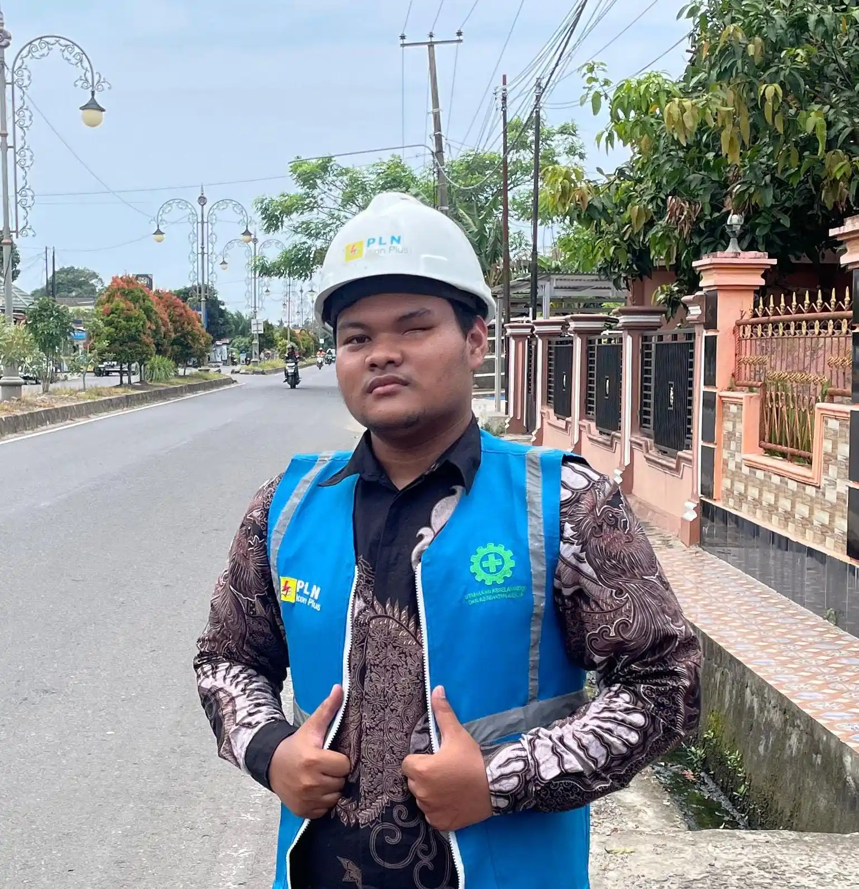

Arisa Melody
Bot musik Discord yang berjalan di server sendiri, lengkap dengan situs statistik.
Node.js, Lavalink, SQLite
1U faceplate deni26.my.id

Mahasiswa Informatika, lulusan SMK Teknik Jaringan Komputer & Telekomunikasi
Saya belajar jaringan di SMK, lalu mempraktikkannya sendiri: crimping kabel, memasang LAN di laboratorium, dan mengendalikan perangkat kecil lewat internet. Sekarang saya melanjutkan ke Informatika.
proyek
Bot musik Discord yang berjalan di server sendiri, lengkap dengan situs statistik.
Node.js, Lavalink, SQLite
Gim Web-based sederhana dengan karakter Hu Tao dari gim Genshin Impact.
Node.js, HTML, SQLite, game
Server dari perangkat bekas yang dipakai untuk menjalankan layanan sendiri di kamar kos.
perangkat bekas, server rumahan
Kipas yang menyala dan mengatur kecepatannya sendiri mengikuti suhu dan kelembapan ruangan.
ESP32, DHT22, kipas PWM
Prototipe penyiram tanaman yang menyiram sendiri saat tanah kering, dan bisa disiram manual dari halaman web.
ESP8266, IoT, kontrol lewat web
Pemasangan jaringan kabel di laboratorium komputer sekolah, dari pengkabelan sampai konfigurasi perangkat jaringan.
LAN, RouterBOARD, pengkabelan
keahlian
| Kemampuan | Dipakai untuk |
|---|---|
| Networking | Membangun dan mengelola LAN, konfigurasi switch, router, dan MikroTik |
| Hardware | Crimping kabel, memasang konektor RJ45, dan merakit perangkat di meja kerja |
| IoT | Sensor, relay, dan kipas yang dikendalikan ESP32 atau ESP8266, termasuk dari halaman web |
| Node.js | Membuat bot Discord dan layanan kecil yang berjalan di server sendiri |
| Linux | Mengelola server rumahan dari perangkat bekas |
| HTML | Kerangka halaman web yang bisa dibaca peramban dan mesin pencari |
| CSS | Tampilan halaman yang rapi di layar besar maupun HP |
| JavaScript | Interaksi di peramban: ganti tema, buka panel, ubah isi halaman |
| Canva | Poster, banner, dan materi visual untuk tugas sekolah |
| MS Office | Laporan, notulen, dan dokumentasi proyek |
tentang
Saya Deni April Rian Pratama, mahasiswa Informatika di Universitas AMIKOM Yogyakarta. Sebelumnya saya sekolah di SMK jurusan Teknik Jaringan Komputer dan Telekomunikasi. Minat saya jaringan, perangkat keras, dan hal-hal yang bisa dibuat berjalan sendiri.
Portofolio ini saya susun dan perbarui sendiri. Kalau sedang mencari orang untuk pekerjaan jaringan atau IoT, kirim email saja, pasti saya balas.